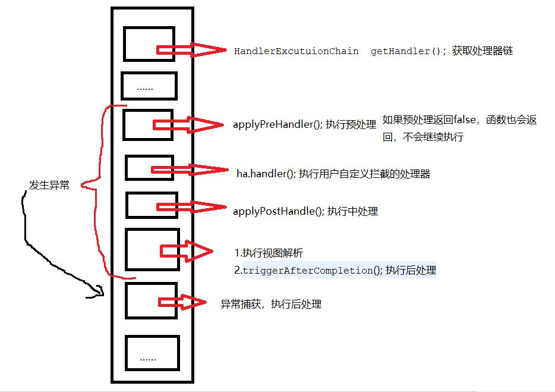
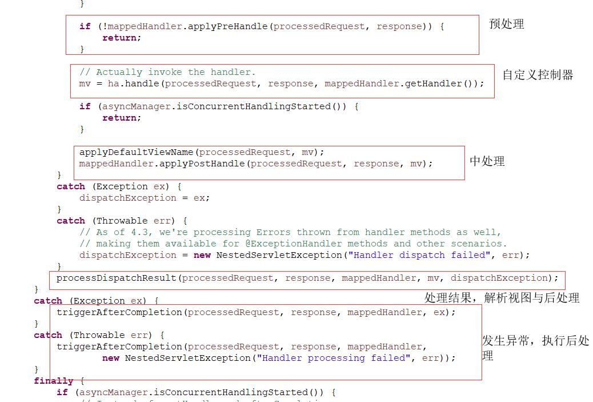
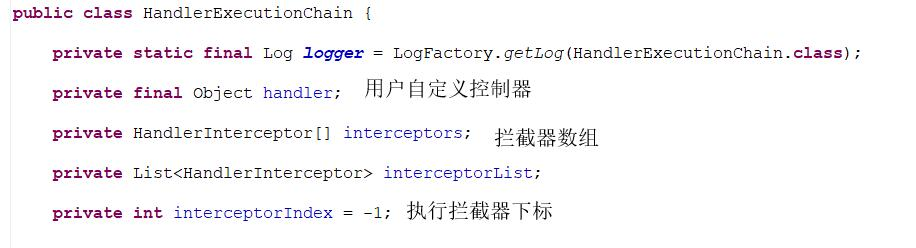
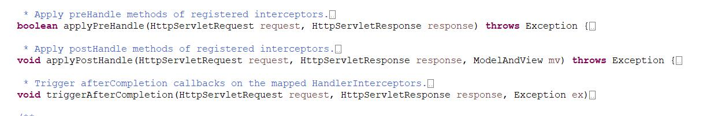
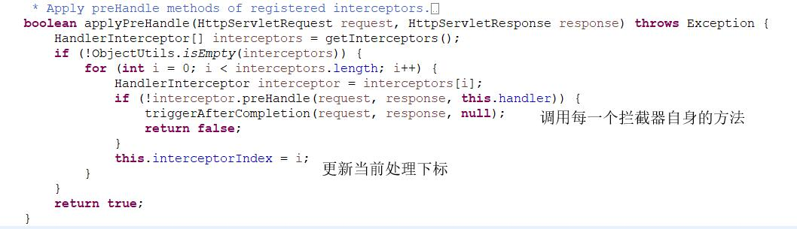
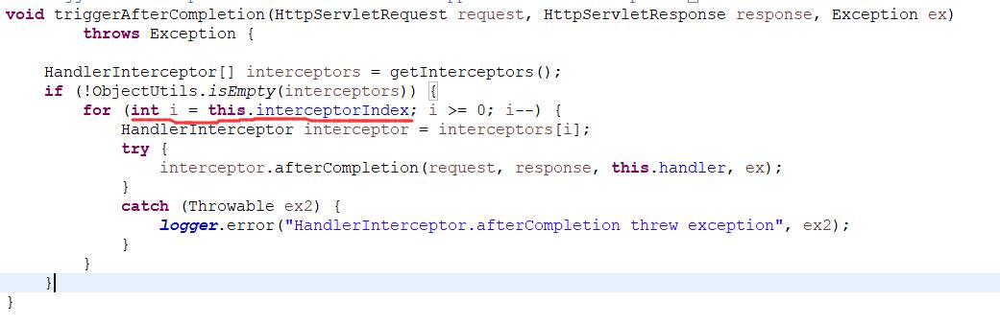
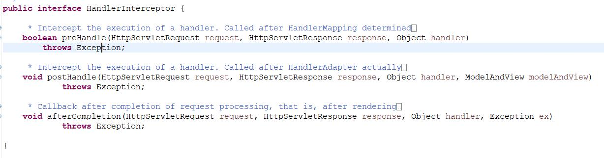
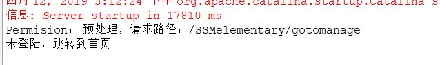
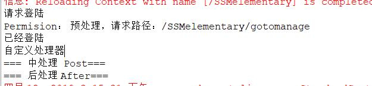

SpringMVC 拦截器浅析与实例
拦截器的作用，类似于传统servlet的过滤器Filter，在执行请求时，做出预处理，与后处理。不过拦截器中，还有一个中处理（暂且这么称呼）。过滤器我们通常用来执行权限验证，统计访问，计算处理时间等等。拦截器也一样，下面先看看DispatchServlet中拦截器的参与过程。

源码预览
doDispatch
这个方法是SpringMVC前端总控制器处理请求的方法，其中，有关拦截器的代码如下：

其中的mappedHandler是一个局部HandlerExecutionChain属性，保存了真正的自定义处理器与拦截器链。
HandlerExecutionChain

可以看到，其中有一个用来存储自定义的控制器的object，有一个存储拦截器的数组和列表。列表方便添加管理拦截器，数组能够快速通过下标进行访问。然后就有一个整型的下标，这个是用来存储预处理时，处理到了哪一个拦截器的下标。具体使用方法如下。

这几个就是DispatchServlet中调用的方法。


通过预处理和后处理的源码，不难看出下标的用途:顺序执行预处理，逆序执行后处理。同理，业是逆序执行中处理。同时，当发生异常时，保证了拦截器能从正确的下标执行后处理。
HandlerInterceptor
拦截器的接口，自定义的拦截器需要实现该接口，同时覆写三个方法。

HandlerExecutionChain中的预处理便是调用了每一个拦截器的实现方法。
需要注意的是：预处理中返回的是布尔值，如果返回false，便会使整个doDispatch()方法返回，因此，该处理也就被忽视了。所以在需要返回false值之前，指定重定向的页面。不然就会显示一片空白。
使用示例
登陆控制器
1 | /** |
假定测试用户名和密码。
利用session记录用户登陆状态。
使用重定向返回首页（正常登陆成功之后跳转到其他页面，直接返回就好了）。
自定义拦截器
1 | /** |
利用session中的参数判断是否登陆。
jsp页面
1 | <a href="gotomanage">进入后台</a> |
配置文件
在配置servlet-web的文件中添加如下配置。1
2
3
4
5
6
7
8
9
10
11<mvc:interceptors>
<mvc:interceptor>
<!-- 配置拦截器需要拦截的路径 -->
<mvc:mapping path="/**" />
<!-- 配置不需要拦截作用的路径 -->
<mvc:exclude-mapping path="/login" />
<mvc:exclude-mapping path="/toindex" />
<!-- 使用哪个拦截器 -->
<bean class="com.jsu.handlernterceptor.PermissionInterceptor" />
</mvc:interceptor>
</mvc:interceptors>
如果有异常可以更换如下xml文档头1
2
3
4
5
6
7
8
9
10<beans xmlns="http://www.springframework.org/schema/beans"
xmlns:xsi="http://www.w3.org/2001/XMLSchema-instance" xmlns:mvc="http://www.springframework.org/schema/mvc"
xmlns:p="http://www.springframework.org/schema/p" xmlns:context="http://www.springframework.org/schema/context"
xsi:schemaLocation="
http://www.springframework.org/schema/beans
http://www.springframework.org/schema/beans/spring-beans.xsd
http://www.springframework.org/schema/context
http://www.springframework.org/schema/context/spring-context.xsd
http://www.springframework.org/schema/mvc
http://www.springframework.org/schema/mvc/spring-mvc.xsd">
运行结果
未登陆点击首页的进入后台

登陆后点击进入后台（自己新建文件）

总结
- 拦截器有三个处理过程（前，中，后），分别在处理器之前；处理器后，视图解析前；视图解析后。
- 被拦截需要设置重定向加载页面。
- 拦截器只能拦截请求，不能拦截页面